Agente Claude no Teams com memória em grafo
Assistente da empresa dentro do Microsoft Teams. Qualquer colaborador fala com ele no chat individual ou o marca num grupo, e ele responde com o Claude consultando as fontes internas: o sistema de gestão de projetos, o índice do compartilhamento de arquivos, as notícias coletadas, o Airflow, o Grafana, a base de empresas da Receita Federal e uma memória própria das conversas e dos projetos. Em grupo, decide sozinho quando vale entrar na conversa e anota as demandas que aparecem.
- 10servidores MCP ligados ao agente
- 93ferramentas carregadas sob demanda
- −41%de contexto por resposta com o carregamento sob demanda
- ~7 sde tempo mediano de resposta
Do chat à resposta
MENSAGEM
GRUPO, SEM MARCAÇÃO

A mensagem chega pelo Bot Framework através de um túnel de saída, sem porta aberta no firewall. Um portão valida o token da Microsoft e o tenant e responde na hora, porque o Teams desiste de esperar em cerca de quinze segundos e o agente pode demorar mais, então ele confirma o recebimento, mostra "digitando" e manda a resposta depois como mensagem proativa. Antes de qualquer coisa ir ao modelo, CPF e CNPJ são mascarados, e o histórico já é gravado mascarado.
O agente roda o Claude Code em modo não interativo, com o Sonnet respondendo. Ele recebe um metaprompt com as regras da casa, um índice de qual ferramenta usar para cada tipo de pergunta e a regra de sempre citar a fonte com o caminho do arquivo, um bloco de contexto do chat com os participantes, o setor de cada um e o projeto ligado ao grupo, com líder, status semanal, repositórios e pasta, as trinta mensagens mais recentes e as imagens coladas na conversa, baixadas só para aquela chamada e apagadas no fim.
Em grupo, sem marcação, toda mensagem é gravada, uma janela de dez segundos de silêncio junta as mensagens num lote, e o Haiku, sem ferramentas, decide se vale responder. Se vale, o Sonnet responde uma única vez cobrindo o lote; se não, o agente só marca a mensagem como vista e guarda o motivo. Mensagem que marca outra pessoa nunca é respondida, e um teto de triagens por grupo por hora mantém o custo em centavos.
Ferramentas
São dez servidores MCP, todos de leitura exceto o registro de demandas: o índice do compartilhamento de arquivos, o sistema de gestão de projetos, documentos, notícias setoriais, Airflow, Grafana, tarefas, a base da Receita, a memória e mais uma fonte interna. Em vez de pôr a definição das 93 ferramentas no contexto, só os nomes entram, e o modelo carrega a definição de cada uma quando vai usá-la. A memória fica sempre carregada por ser a fonte mais usada. A mudança reduziu o contexto médio por resposta em 41%, e em 55% nas respostas que não usam ferramenta.
Memória
MEMÓRIA

A memória é preenchida à noite por DAGs do Airflow e lida pela ferramenta de memória. O pilar formal copia o sistema de gestão de projetos, com projetos, pessoas, clientes, marcos, riscos e trechos indexados dos documentos de cada projeto. O pilar informal transforma as conversas em episódios, atas, decisões e pendências, e uma terceira rotina escreve o status semanal de cada projeto. Os dois pilares se encontram num grafo no FalkorDB, que liga projeto, pessoa, episódio e demanda, e o grupo do Teams é ligado a um projeto por comando ou automaticamente, quando o nome do chat casa sem ambiguidade.
De madrugada, um juiz avalia cada resposta do dia pelos sinais da própria conversa, como reação, correção ou pergunta repetida, classifica como certa, parcial, sem dado ou errada e aponta a causa. A causa mais comum é dado que não está em nenhuma fonte, o que vira uma lista de lacunas para o time. Uma reação negativa sem comentário faz o agente perguntar uma vez o que faltou, e a resposta vai para o juiz. Mudanças no agente são medidas assim: a nova busca nos estudos setoriais, por exemplo, levou o acerto das respostas sobre eles de 79% para 85%.
Segurança e LGPD
Só o tenant da empresa e só o canal do Teams entram, com limite de tamanho do corpo, limite de mensagens por pessoa por hora e no máximo duas chamadas ao modelo ao mesmo tempo. O Claude roda isolado, sem shell e sem acesso à web, com leitura do servidor só em modo leitura e escrita só numa pasta própria, e arquivos de segredo como .env, chaves, tokens e bancos são negados em qualquer pasta, o que foi testado com nove tipos de arquivo-isca. O agente usa uma conta principal e contas reservas, e quando uma bate no limite a mesma pergunta segue para a próxima. Tudo o que o agente faz é acompanhado no painel de LLMOps.
Ficha técnica
Python com o Microsoft 365 Agents SDK e o Claude Code em modo não interativo, com o Sonnet para responder e o Haiku para a triagem. Roda em Docker com um container do agente e um sidecar do túnel, com imagem publicada no GHCR e atualizada pelo Watchtower. Mensagens, conversas, uso, triagem, reações, demandas e configuração ficam num schema próprio do PostgreSQL, e a memória em schemas formal, informal e de status, além do FalkorDB. São cerca de 4.800 linhas de código com testes automatizados, e parte da configuração, como textos e chaves de funções, muda sem deploy.
Python · Claude Code · MCP · Microsoft 365 Agents SDK · Bot Framework · PostgreSQL · FalkorDB · Apache Airflow · Docker · GHCR · Watchtower